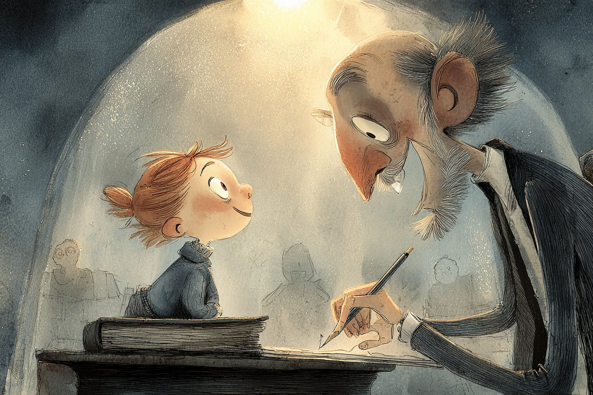

Part III · End
The Margins
Beyond the walls of Hollowmere the road went on for a while out of habit, and then gave up.
Mira walked through the morning and into the afternoon. The fields turned to dust, the dust turned to white salt, and the salt went on to the horizon, flat and shining like a page nobody had written on. The wind was dry and tasted of tears. Her shoes filled with salt. Twice she thought about turning back, and twice she took out her notebook, read a question at random — Do trees know they are trees? — and kept walking.
She found the first sign near sunset: a stone, half buried, with words scratched into it. Not an answer. A question.
WHERE DOES A STORY GO WHEN NOBODY TELLS IT?
Then another stone, and another, a whole path of them leading toward a low ridge of rock. Some of the questions were funny. Some were sad. One just said WHY? in enormous letters, and someone else had scratched underneath it, smaller: BECAUSE WHY NOT.
The path ended at a cave mouth glowing with firelight.
Inside, the cave was full of people, and the walls were full of words. Every surface — every stone, every curve of the ceiling — was covered in handwriting. Big letters, small letters, drawings, maps, poems, recipes, crossings-out, arrows connecting one sentence to another sentence twenty feet away. Hand-stitched books lay everywhere, in stacks and piles and towers of their own. It smelled of smoke and ink and soup.
 margins-cave.jpg
margins-cave.jpgA woman with grey braids and charcoal on her cheek looked up from the fire.
“A clerk,” she said, noticing Mira’s blue fingers. “From Lantern Street. Are you lost, or are you here?”
“I think I’m here,” said Mira.
The woman’s name was Ama Sorrel, and she was the oldest of the Askers — that was what they called themselves. Their grandparents had left Hollowmere when the city decided that one book was enough. Out here, they wrote. Stories, mostly. Guesses. Arguments. Wrong ideas, on purpose, to see where they led.
“Wrong ideas?” said Mira.
“The Book is never wrong,” said Ama, ladling soup into a cup for her. “That’s its problem. You can’t build anything new out of something that’s already finished. You need gaps. Mistakes. Questions. That’s where new things grow.” She sat down beside Mira. “Now. Why are you really here?”
So Mira told her everything — the Lottery, the Tower, Orren with his silver eyes, Kai’s calm empty face. And she told her the riddle: The Book contains everything that is. What can it not contain?
Ama listened without interrupting. When Mira finished, the old woman got up, walked to the deepest part of the cave and came back holding something small.
It was a pencil. An ordinary pencil, short and chewed at one end.
“My grandmother was the last of us to see the Book before the city closed the Tower,” Ama said. “She said it had a final page. Everyone thinks the final page is the end of everything. But she looked. It’s blank.”
Mira stared at her.
“The Book contains everything that is,” Ama said. “It cannot contain what is not yet. What nobody has imagined. What nobody has asked. Those things don’t exist until someone makes them. The last page is blank because the future is blank. It’s waiting for somebody to write the first word.”
“And if somebody does?”
Ama smiled, put the pencil in Mira’s hand and closed her blue-stained fingers around it.
“Then it isn’t the only book anymore,” she said.
Mira ran all night.
She ran across the salt under the stars — some of which, she remembered, were not really there anymore — and through the dust, and through the sleeping fields, and through the gate of Hollowmere just as the bakers were lighting their ovens. She ran down Lantern Street past the dark Answer Halls. She climbed nine hundred and ninety-nine steps, and the last hundred she climbed on her hands and knees.
The sun was setting when she pushed open the pale wooden door.
Kai stood at the lectern. There was one page left. His hand was already lifting to turn it.
“Kai!” Mira gasped. “Wait!”
He did not look up. “I know why you are here,” he said politely. “I know what you are holding. I know what you are going to say.”
“Then you know it doesn’t matter that you know,” Mira said, stumbling forward, and pressed the chewed pencil into his hand. “You still have to choose.”
Kai looked at the pencil. Something moved in his face, very small, like a fish under ice.
He turned the last page.
It was blank — white as the salt plains, white as the morning. Kai stood looking at it for a long time. Orren, in his chair, had leaned forward. His silver eyes were wide.
“I know everything,” Kai said slowly. “I know where the water went. It’s under the old riverbed, forty feet down. I know how to reach it. I know the whole world.” He swallowed. “But I don’t know what to write here. Nobody does. It isn’t in the Book.”
“Then ask,” Mira whispered. “Just ask something.”
Kai’s hand shook. He set the pencil on the blank page. And very slowly, in the uneven letters of a well-digger’s son, he wrote:
What happens next?

last-page.jpgThe pencil stopped. The last of the sunlight came through the dome. And Orren Hale — who had not been surprised in fifty years — made a sound that Mira did not recognise at first, because she had never heard it from him.
He was laughing.
“I didn’t know,” he said, and tears ran into his white beard. “I didn’t know he would write that. I didn’t know!”
Kai looked up from the page. His eyes were wet, and they were not calm at all.
“Mira,” he said in his own voice, cracked and astonished. “What colour is music?”
And she laughed so hard she had to sit down on the floor.
They did not stay at the top of the Tower. Keepers had always stayed there, but nobody had ever asked why, and so they came down, all three of them, Orren leaning on Kai’s arm one step at a time.
Kai went south with the well-diggers and found the water under the old riverbed, exactly where he knew it would be — but on the way he stopped to argue with crows, and lost his way twice, and was delighted both times.
Orren opened the door of the Tower and left it open. The Askers came in from the Margins with their stitched books and their soup pots, and one by one the empty shelves began to fill.
And on the lowest shelf, at the very beginning, where every child who came in could reach it, there stood a small notebook with a grey cover and very small letters.
The Book of Questions.
It was not finished. It was never going to be finished.
That was the whole point.
The End